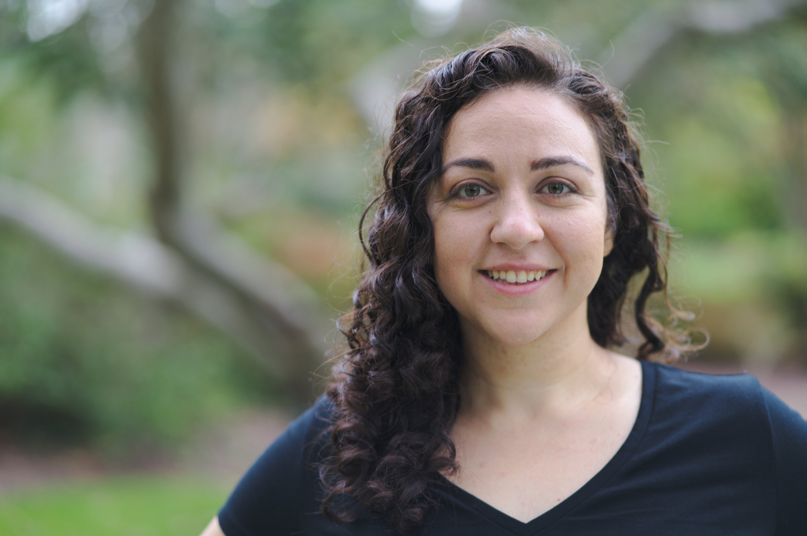

|  | Microsoft {firstInital}{lastName}@Microsoft.com About | Publications | Talks | Teaching | Google Scholar |
We are hiring interns! please apply if interested.
I am presenting Perplexity-Driven Case Encoding Needs Augmentation for CAPITALIZATION Robustness at SSNLP.
We have a new preprint out: On-the-Fly Fusion of Large Language Models and Machine Translation. This is joint work with Hieu Hoang and Marcin Junczys-Dowmunt.
Perplexity-Driven Case Encoding Needs Augmentation for CAPITALIZATION Robustness was accepted at AACL. This is joint work with Rohit Jain, Roman Grundkiewicz, and Marcin Junczys-Dowmunt.
I am a senior researcher at Microsoft, working on the Microsoft Translator team.
Previously, I was a PhD student in Computer Science at The Johns Hopkins University (JHU), advised by Philipp Koehn. I was part of the Center for Language and Speech Processing (CLSP) and the machine translation group.
In Summer 2019, I was a research intern at Lilt, working on translator-in-the-loop machine translation.
I graduated from UC Berkeley with a B.A. in Computer Science in May 2015. I worked with Colleen Lewis on computer science education, Andreas Stolcke on tools for speech processing, and Jerry Feldman on natural language understanding.
The Johns Hopkins University | August 2015 - 2021
PhD, Computer Science
MSE, Computer Science | May 2017
University of California, Berkeley | August 2011 - May 2015
* indicates authors contributed equally.
Please see Google Scholar for latest publications.
Simulated Multiple Reference Training Improves Low-Resource Machine Translation [Nominated for Best Paper at WeCNLP]
Huda Khayrallah, Brian Thompson, Matt Post, Philipp Koehn
Proceedings of the 2020 Conference on Empirical Methods in Natural Language Processing (EMNLP) 2020
[paper] [code] [data] [EMNLP_slides.pdf] [EMNLP_slides.ppt]
[3 min WeCNLP video poster] [8 min WeCNLP lightning talk video] [wecnlp_slides.pdf] [WeCNLP_slides.ppt] [wecnlp_poster.pdf] [WeCNLP_poster.pptx]
SMRT Chatbots: Improving Non-Task-Oriented Dialog with Simulated Multiple Reference Training
Huda Khayrallah, João Sedoc
Findings of the 2020 Conference on Empirical Methods in Natural Language Processing (EMNLP) 2020
[paper]
The JHU Submission to the 2020 Duolingo Shared Task on Simultaneous Translation and Paraphrase for Language Education
[Highest scoring submission in all 5 language pairs]
Huda Khayrallah, Jacob Bremerman, Arya D. McCarthy, Kenton Murray, Winston Wu, Matt Post
Proceedings of the Fourth Workshop on Neural Generation and Translation at ACL 2020
[paper] [bib] [slides.ppt] [slides.pdf]
HABLex: Human Annotated Bilingual Lexicons for Experiments in Machine Translation
Brian Thompson,* Rebecca Knowles,* Xuan Zhang,* Huda Khayrallah, Kevin Duh, Philipp Koehn
Proceedings of the 2019 Conference on Empirical Methods in Natural Language Processing and the 9th International Joint Conference on Natural Language Processing (EMNLP-IJCNLP) 2019
[paper] [bib] [data]
Deep Generalized Canonical Correlation Analysis
Adrian Benton, Huda Khayrallah, Biman Gujral, Dee Ann Reisinger, Sheng Zhang, Raman Arora
Proceedings of the 4th Workshop on Representation Learning for NLP (RepL4NLP) 2019 at ACL
[paper] [bib] [code]
Overcoming Catastrophic Forgetting During Domain Adaptation of Neural Machine Translation
Brian Thompson, Jeremy Gwinnup, Huda Khayrallah, Kevin Duh, Philipp Koehn
Proceedings of the 2019 Conference of the North American Chapter of the Association for Computational Linguistics: Human Language Technologies (NAACL) 2019
[paper] [bib]
Improved Lexically-Constrained Decoding for Translation and Monolingual Rewriting
J. Edward Hu, Huda Khayrallah, Ryan Culkin, Patrick Xia, Tongfei Chen, Matt Post, Benjamin Van Durme
Proceedings of the 2019 Conference of the North American Chapter of the Association for Computational Linguistics: Human Language Technologies (NAACL) 2019
[paper] [bib] [appendix.pdf] [demo & code]
An Interactive Teaching Tool for Introducing Novices to Machine Translation
Huda Khayrallah, Rebecca Knowles, Kevin Duh, Matt Post
Proceedings of the 50th ACM Technical Symposium on Computer Science Education (SIGCSE) 2019
[paper] [bib] [poster.pdf] [demo & code]
Freezing Subnetworks to Analyze Domain Adaptation in Neural Machine Translation
Brian Thompson, Huda Khayrallah, Antonios Anastasopoulos, Arya D. McCarthy, Kevin Duh, Rebecca Marvin, Paul McNamee, Jeremy Gwinnup, Tim Anderson, Philipp Koehn
Proceedings of the Third Conference on Machine Translation (WMT) 2018 at EMNLP
[paper] [bib] [slides.pdf]
Findings of the WMT 2018 Shared Task on Parallel Corpus Filtering
Philipp Koehn, Huda Khayrallah, Kenneth Heafield, Mikel L. Forcada
Proceedings of the Third Conference on Machine Translation (WMT) 2018 at EMNLP
[paper] [bib]
The JHU Parallel Corpus Filtering Systems for WMT 2018
Huda Khayrallah, Hainan Xu, Philipp Koehn
Proceedings of the Third Conference on Machine Translation (WMT) 2018 at EMNLP
[paper] [bib]
On the Impact of Various Types of Noise on Neural Machine Translation [Outstanding Contribution Award]
Huda Khayrallah, Philipp Koehn
Proceedings of the Workshop on Neural Machine Translation (WNMT) 2018 at ACL
[paper] [bib] [slides.ppt] [slides.pdf] [poster.pdf] [data]
Regularized Training Objective for Continued Training for Domain Adaptation in Neural Machine Translation
Huda Khayrallah, Brian Thompson, Kevin Duh, Philipp Koehn
Proceedings of the Workshop on Neural Machine Translation (WNMT) 2018 at ACL
[paper] [bib] [poster.pdf]
Improving Low Resource Machine Translation using Morphological Glosses
Steven Shearing, Christo Kirov, Huda Khayrallah, David Yarowsky
Proceedings of the Conference of the Association for Machine Translation in the Americas (AMTA) 2018
[paper] [bib]
Neural Lattice Search for Domain Adaptation in Machine Translation
Huda Khayrallah, Gaurav Kumar, Kevin Duh, Matt Post, Philipp Koehn
Proceedings of the International Joint Conference on Natural Language Processing (IJCNLP) 2017
[paper] [bib] [code] [slides.ppt] [slides.pdf]
The JHU Machine Translation Systems for WMT 2017
Shuoyang Ding, Huda Khayrallah, Philipp Koehn, Gaurav Kumar, Matt Post, Kevin Duh
Proceedings of the Second Conference on Machine Translation (WMT) 2017
[paper] [poster] [bib]
Paradigm Completion for Derivational Morphology
Ryan Cotterell, Ekaterina Vylomova, Huda Khayrallah, Christo Kirov, David Yarowsky
Proceedings of the Conference on Empirical Methods in Natural Language Processing (EMNLP) 2016
[paper] [bib] [data]
Translation of Unknown Words in Low Resource Languages
Biman Gujral, Huda Khayrallah, Philipp Koehn
Proceedings of the Conference of the Association for Machine Translation in the Americas (AMTA) 2016
[paper] [bib] [slides.ppt] [slides.pdf]
The JHU Machine Translation Systems for WMT 2016
Shuoyang Ding, Kevin Duh, Huda Khayrallah, Philipp Koehn, Matt Post
Proceedings of the First Conference on Machine Translation (WMT) 2016
[paper] [poster] [bib]
Natural Language For Human Robot Interaction
Huda Khayrallah, Sean Trott, Jerome Feldman
Workshop on Human-Robot Teaming at the ACM/IEEE conference on Human-Robot Interaction (HRI) 2015
[paper] [bib]
Mining Data from the AP CS A Exam: Patterns, Non-Patterns, and Replication Failure
Colleen Lewis, Huda Khayrallah, Amy Tsai
International Computing Education Research Conference (ICER) 2013
[paper] [bib]
An Empirical Exploration of Curriculum Learning for Neural Machine Translation
Xuan Zhang, Gaurav Kumar, Huda Khayrallah, Kenton Murray, Jeremy Gwinnup, Marianna J Martindale, Paul McNamee, Kevin Duh, and Marine Carpuat
[paper] [bib] [code]
Machine Translation with Diverse Data Sources
NYU Abu Dhabi Computer Science Seminar
September 1, 2019
[slides.ppt] [slides.pdf]
Machine Translation with Diverse Data Sources
University of Pennsylvania Computational Linguistics Seminar
April 8, 2019
[slides.ppt] [slides.pdf]
Machine Translation with Diverse Data Sources
Johns Hopkins University Center for Language and Speech Processing Seminar
March 29, 2019
[slides.ppt] [slides.pdf]
Continued Training Algorithms
SCALE 2018 Workshop at Johns Hopkins University
August 9, 2018
[slides.ppt] [slides.pdf]
Neural Lattice Search for Domain Adaptation in Machine Translation (+ An overview of Machine Translation)
Johns Hopkins University Center for Language and Speech Processing Seminar
November 17, 2017
[slides.ppt] [slides.pdf]
Teaching Assistant for Machine Translation (JHU CS 601.468/668) taught by Philipp Koehn – Fall 2018
Teaching Assistant for Artificial Intelligence (JHU CS 601.464/664) taught by Benjamin Van Durme – Spring 2017
Guest Lecturer for Artificial Intelligence (JHU CS 601.464/664) taught by Benjamin Van Durme – Fall 2018, Fall 2019
Huda rymes with CUDA (parallel framework) and gouda (cheese) – WHO-duh – /ˈhuːdə/
Khayrallah is less scary than it looks! kay-RA-la – /keɪˈɹɑlɑ/
My pronouns are she/her